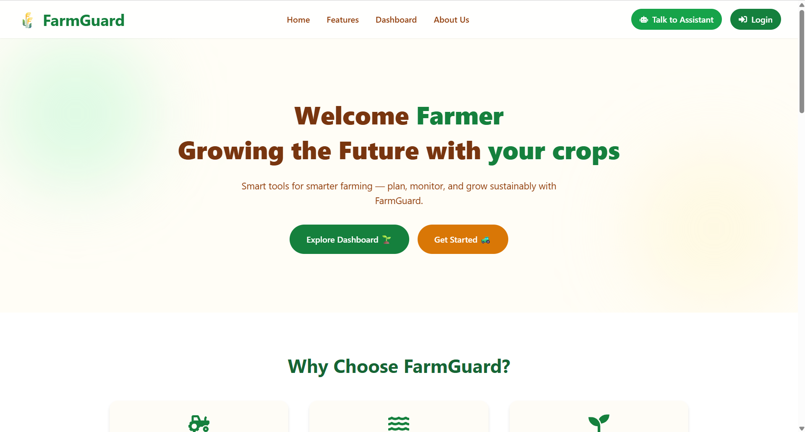

Project Overview

FarmGuard is an AI- and API-driven smart farming platform designed to help farmers make informed, data-driven decisions across the entire crop lifecycle. By combining soil health data, crop intelligence, and real-time weather insights, FarmGuard empowers farmers to grow crops more efficiently, sustainably, and profitably.
Problem & Solution
The Problem
Traditional farming decisions are often based on experience, guesswork, or delayed information. Farmers struggle with unpredictable weather, poor soil insights, inefficient irrigation, and improper fertilizer usage—leading to reduced yields and resource wastage.
The Solution
FarmGuard addresses these challenges by using AI-powered analytics and real-time APIs to provide actionable insights. The platform recommends optimal crops, irrigation schedules, and fertilizer strategies based on soil parameters, climate conditions, and historical data.
My Role & Contributions
I worked on FarmGuard as a Full Stack Developer, contributing to system design, AI logic integration, frontend development, and API orchestration.
- Frontend Development
- Designed a clean, farmer-friendly interface focused on clarity and accessibility.
- Built responsive dashboards for crop insights, weather data, and recommendations.
- AI & Data Intelligence
- Implemented AI-based crop recommendation logic using soil and climate data.
- Designed rule-based and predictive models for irrigation and fertilization guidance.
- API Integration
- Integrated weather APIs for real-time and forecast-based insights.
- Consumed soil and agricultural data APIs for accurate field-level analysis.
- Optimization & Scalability
- Focused on reducing decision latency for time-sensitive farming actions.
- Designed workflows scalable for regional and national deployment.
Technologies Used
- HTML5
- CSS3
- JavaScript (ES6+)
- AI / ML Models
- Weather APIs
- Soil & Crop Data APIs
- Backend Database / Firebase
- Git & GitHub
Challenges & Learnings
- Data Reliability: Ensuring consistency and accuracy across multiple APIs taught me robust validation and fallback strategies.
- AI Explainability: Presenting AI recommendations in a way farmers can trust reinforced the importance of transparency in AI systems.
- Sustainable Design: Balancing productivity with eco-friendly practices strengthened my understanding of responsible tech development.
Future Enhancements
- IoT sensor integration for real-time soil moisture and nutrient tracking.
- Satellite imagery analysis for crop health monitoring.
- AI-based yield prediction and risk assessment.
- Regional language support for wider farmer accessibility.